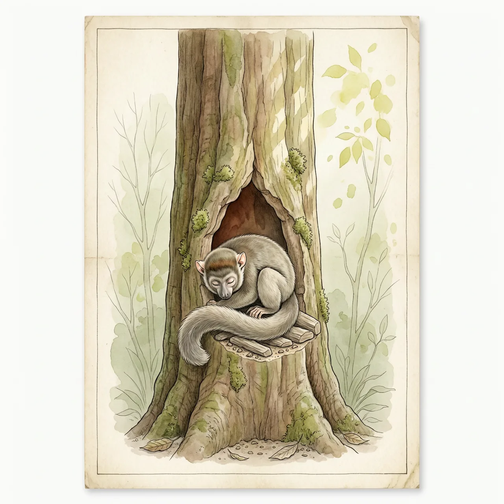
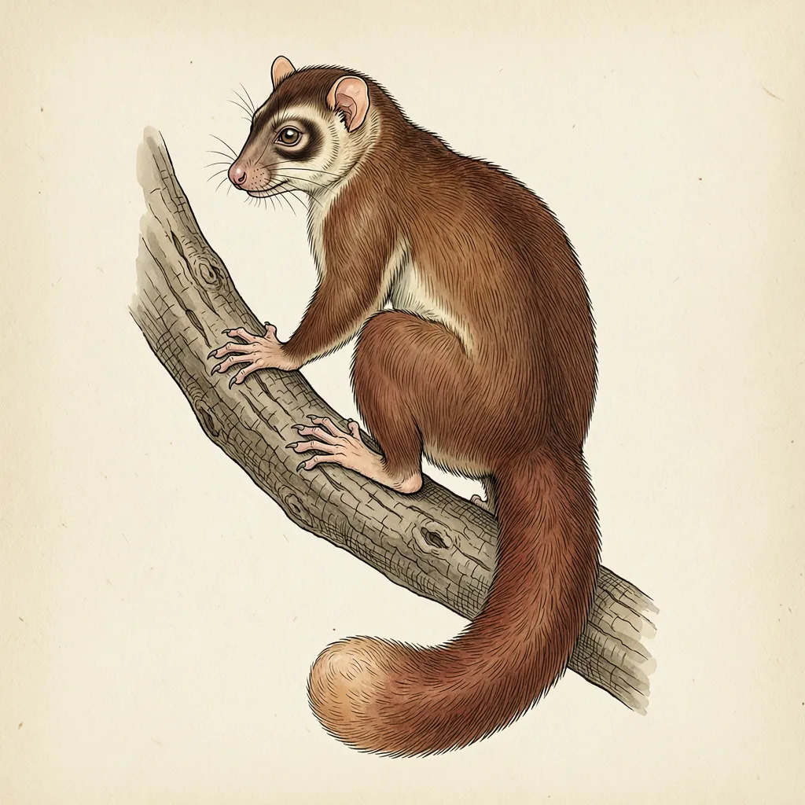

大鼠狐猴生活在马达加斯加东海岸，体毛灰色或红褐色，眼周有一圈深色。旱季临近，它把脂肪囤进尾巴，躲进树洞长时间蛰伏，体温随环境起伏；脂肪在睡中被消耗，醒来时尾巴明显变细，要重新进食补足。在灵长类里，这套本领极为少见。
马达加斯加的东海岸，树洞多的林子里住着大鼠狐猴。它是狐猴科的一员，体毛灰色或红褐色，眼睛周围一圈深色。它住的森林分明的干湿两季，旱季一来食物越来越少，大鼠狐猴的应对不是去更远的地方找食，而是把这个季节睡过去。
旱季到来之前，大鼠狐猴不停进食，多余的能量不平均存在身上，而是集中进尾巴：尾巴变得明显粗大，那是它随身带着的口粮袋。旱季深入，大鼠狐猴找一处树洞蜷进去，开始长时间的蛰伏。这期间体温不再恒定，跟着洞内外环境的温度起伏，新陈代谢降到极低。尾巴里的脂肪在睡中被慢慢消耗，等它爬出树洞，尾巴已经比入洞时细上一圈。
很多人以为尾巴是根平衡杆，松鼠在枝间跳跃时靠它找重心。大鼠狐猴展示了另一种用法：一座可以取用的仓库。更意外的是做这件事的是谁——让体温跟着环境走、一睡过一个季节，这种本事通常联系到睡鼠、土拨鼠一类小型哺乳动物；而在大鼠狐猴所属的灵长类里，它属于极少数这样做的例子。雨季回来、食物恢复，大鼠狐猴的尾巴会重新一点点囤粗，下一次树洞里的睡眠已经有了安排。
